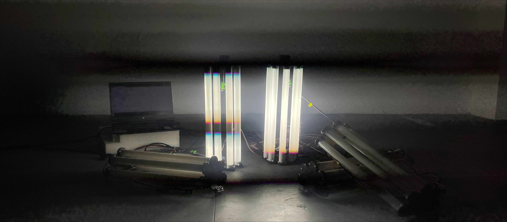
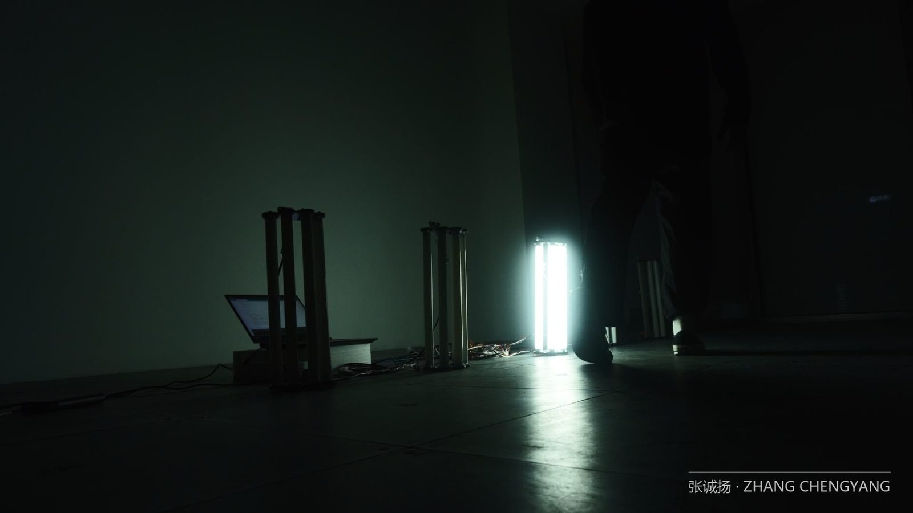
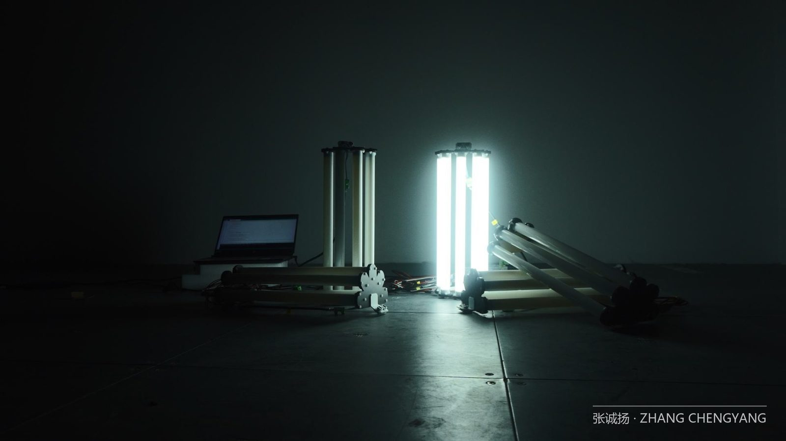

交互装置 / 灯光体验
回声步伐
ECHOING STEPS

PROJECT 03 · 个人项目
回声步伐
ECHO STEPS
一款夜间跑步辅助互动装置。在有氧运动的前 15 分钟，跑者常常因过度疲劳而放弃后续的长距离跑步。通过观察自然环境中真实的场景，借助测试与反复实验，我完成了一项灯光设计实验——研究发现，当夜跑者感到疲惫时，他们调节呼吸频率的能力会更好。
研究背景 —— 夜间跑步正变得越来越流行
越来越多的人白天时间被严重压缩。对于想锻炼的人来说，只能选择早上或晚上外出运动——而大多数人选择在一天结束时、晚上去跑步。
84%
喜欢晚上跑步
VS 喜欢白天跑步
68%
习惯独自跑步
VS 结伴跑步
↑↑
户外跑步逐年上升
2019 → 2024 持续增长，2024 反超室内
户外跑步
室内跑步
设计原理 —— 「极点」与「第二次呼吸」
在长距离有氧运动中，跑到一半时我们会感到呼吸困难、肌肉无力——这是生理上的「极点」，让人想要放弃。但坚持继续奔跑，经过一段距离后，动作会变得轻松有力、呼吸顺畅——这就是「第二次呼吸」，一些学者称之为「跑步者的巅峰」。
BREATH 2:1
正确的呼吸节奏
跑步者的呼吸与步幅通常为 2:1，但至少还有其他五种比例可用于不同情境：4:1、5:2、3:1、3:2、1:1。马拉松跑者常采用 3:1 或 5:2，初学者则总采用 1:1。
LIGHT
视觉刺激
视觉是人类最重要的感官之一，主要由光刺激人眼产生。光具有特定频率与波长的电磁辐射——在广袤的电磁辐射中，可见光只是狭小的一段。
SHADER
灯光效果模拟
使用片段着色器组件生成动态视觉效果，模拟灯光的「呼吸闪烁」——动态 Y 轴偏移量根据时间及回路索引生成，利用余弦函数确保周期性。
产出结果 —— 会「呼吸」的路灯


58%
样本占比
63%
调研数据
73%
呼吸调节